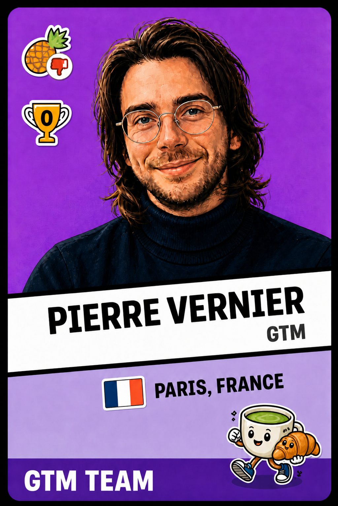

This isn't a resume. It's the playbook I'd actually run at PostHog — with real companies, real signals, and real emails I'd send on day one. Tear it apart, steal what works, bin the rest.
Read the Playbook ↓Start from product signals, not cold lists. Expand what's already working.
No signal, no outbound. Every touch needs a reason to exist.
Real companies. Real research. Real emails. Not template theatre.
No pain, no impact, no timeline? Say so and move on.
PostHog's buyers are technical. They read docs before taking demos. They'll Google you after your email. Outbound has to earn credibility, not demand attention.
Every touch ties to usage, job move, hiring, stack change, or product launch.
"Usually this creates X" — not pretending you know their internal pain.
"Would it be useful if I showed how teams solve this in PostHog?"
Pain + impact + timing + buyer path determine the next step. Period.
If they're better off in docs, send them to docs. That's a win.
Would this email still make PostHog look good if they screenshot it on Twitter?
Engineering-led B2B SaaS, devtools, AI products, and product-led companies where engineers influence buying and there's a credible path to meaningful spend.
High event volume, multiple products active, new team members, billing triggers
Former user/champion joins a new company
Visits pricing, docs, comparison, security, or enterprise pages
Product Engineer, Growth Engineer, Product Analyst, Experimentation Lead
Amplitude/Mixpanel + Segment + LaunchDarkly/Hotjar/BigQuery detected
Series A-C, fast engineering team growth, recent product launch
| # | Segment | Type | Primary pain |
|---|---|---|---|
| 1 | Warmbound product-led accounts | Warm | Existing usage, under-expanded |
| 2 | Job switchers | Warmish | Known user evaluating tools at new company |
| 3 | High-intent technical audience | Warmish | Visible interest, no sales path yet |
| 4 | PLG DevTools — fragmented stack | Cold | No trusted source of truth for product data |
| 5 | AI product teams shipping LLM features | Cold | Shipping without understanding real user behavior |
| 6 | Growth-led SaaS — activation bottlenecks | Cold | Weak attribution and activation visibility |
| Signal | Score |
|---|---|
| Already using PostHog with meaningful activity | +5 |
| New products/team members or fast usage growth | +4 |
| Former PostHog user/champion at account | +4 |
| Uses 2+ relevant alternatives or point tools | +3 |
| Hiring product/growth/data/experimentation roles | +3 |
| PLG / self-serve / free tier / docs visible | +3 |
| Recent funding or strong headcount growth | +2 |
| No visible pain or trigger | -5 |
| No buyer path / no engineering org | -5 |
Pick a preset or build the signal stack manually. The score updates live, like the Clay view I'd use before deciding whether to outbound.
Each persona has different pain. The messaging library maps those pains to real PostHog customer proof points.
Anyone can write a playbook with {{variables}}. Here's what it looks like when I actually do the work:
real signal research, real persona selection, real emails I'd send. Judge the quality.
Developer productivity platform • Series B ($30M) • ~40 employees • Berlin HQ
Raycast's value depends on which extensions users adopt and stick with. With a marketplace model, they need to know which extensions drive retention vs. which get installed and forgotten. That's a product analytics + experimentation problem, not a GA4 problem.
Product Engineer working on the extensions platform or onboarding flow. They care about instrumentation, not dashboards. They want to know "which extensions correlate with 30-day retention?" without filing a ticket to the data team.
At 40 people, there's probably no VP Product or Head of Growth yet. The product engineer who owns the extensions platform IS the buyer. Going above them would feel like going around them — that's a brand risk.
Developer documentation platform • Series B ($45M) • ~55 employees • San Francisco
Mintlify is adding AI features (AI search, AI chat) on top of docs. The question isn't whether users try them — it's whether they come back. At 10x growth, they need to separate "AI feature curiosity" from "AI feature retention" before doubling down on the roadmap.
Growth Engineer or Product Lead owning the AI features or the self-serve conversion funnel. At $10M ARR with 10x growth, someone is obsessing over which features drive expansion vs. which are shiny but don't convert.
Cold — AI product team play. Strong ICP fit, clear AI feature adoption signal, growing engineering team. The hiring signal (11 roles) suggests they're building fast and need to measure what's working before they 3x the team.
Synthetic data platform • Series B ($47M) • ~120 employees • San Francisco
Tonic.ai has three distinct products. As they 3x the team, they need to understand which product drives land, which drives expand, and where users drop across the multi-product journey. That cross-product visibility is exactly where point tools fall apart.
Warmbound and job-switcher campaigns first. Cold named-accounts only with a concrete pain hypothesis.
Accounts already using PostHog with meaningful usage, product count, or team growth signals.
"Your team is already using X. Teams at this stage often get value by adding Y because it connects Z."
"Worth reviewing where your current PostHog setup could remove another tool?"
Former PostHog users, champions, or admins who moved into a new relevant role.
New job at a company with product-led motion or fragmented stack.
"You used PostHog before. Thought it might be relevant as you build the stack at [new company]."
Series A-C devtool / infra / OSS-led SaaS with docs, free tier, and stack sprawl.
Detected Amplitude/Mixpanel + Segment + LaunchDarkly/Hotjar; hiring product/growth engineers.
AI SaaS teams launching LLM workflows, evals, copilots, or usage-based products.
AI feature launch, usage-based pricing, hiring product/growth/data roles.
The goal isn't to close in one call. It's to decide if PostHog solves a real problem, whether there's commercial potential, and whether there's a concrete next step.
Explain why you reached out and what signal triggered the conversation.
What does this person own, and do they feel the pain directly?
Analytics, replay, flags, experiments, warehouse, attribution, error tracking.
What's slow, trusted poorly, duplicated, expensive, or hard to debug?
Time wasted, experiments delayed, conversion issue, tool cost, engineering opportunity cost.
Is there a live project? Are they the buyer, champion, or route to buyer?
Only after pain is clear. "Would it be useful if I showed how teams solve this?"
"What would prevent this from becoming a priority?"
Trial, technical demo, team intro, async Loom, docs, or close out.
The roadmap, the ops stack, and the metrics I'd track — all in one place. This is a hypothesis, not a prescription. I'd iterate weekly based on what the data says.
Understand PostHog's product usage data, CRM state, existing outbound learnings. Build first warmbound and job-switcher lists in Clay. Set up scoring model. Ship first sequences.
Launch warmbound expansion + job-switcher campaigns. Run one small cold test (PLG devtools). Analyze replies — are the pain hypotheses landing?
Scale what converts. Kill what doesn't. Add AI product team campaigns if cold test shows signal. Output: first qualified meetings, segment scorecard, copy iterations.
Salesforce routing automated. Clay enrichment running weekly. Weekly outbound review cadence with the team. Start building repeatable playbooks by segment.
Add new signal sources: closed-lost reactivation, event lists, competitor consolidation plays. Build pipeline model. Contribute learnings back to PostHog's GTM playbook.
| Layer | Tools | Purpose |
|---|---|---|
| Infrastructure | Zapmail | Domains, inboxes, DNS, SPF/DKIM/DMARC, warmup |
| Data & enrichment | Clay / FullEnrich | Account enrichment, signal detection, AI research, verified emails and phones |
| Validation | ZeroBounce | Email validation, bounce prevention, inbox placement checks |
| Sending | Smartlead | Controlled cold outbound tests, inbox rotation, reply tracking |
| Automation | Claude Code / n8n | Workflows, routing, enrichment pipelines, reply handling, account analysis |
| CRM / source of truth | Salesforce | Account history, qualification, opportunity tracking |
| Product-led signals | PostHog | Usage, intent, website behavior, warmbound triggers |
Best early signal of message-market fit. Are the pain hypotheses resonating with technical buyers?
Do prospects confirm the pain in their own words? This matters more than meeting volume.
The real north star. Are these turning into commercial conversations, not just demos?
Which triggers justify outreach? Helps Clay and the scoring model get smarter over time.
Negative replies, unsubscribes, spam complaints. PostHog's brand is an asset — protect it.
A high disqualification rate means targeting is too broad. A low one means I'm not qualifying hard enough.
Pain hypothesis is wrong. Negative replies indicate brand damage. No problem agreement after 50 sends.
Prospects repeat the pain in their own words. Problem agreement is consistent across the segment.
Positive replies but weak CTA conversion. Scale only when the signal is repeatable in Clay.
